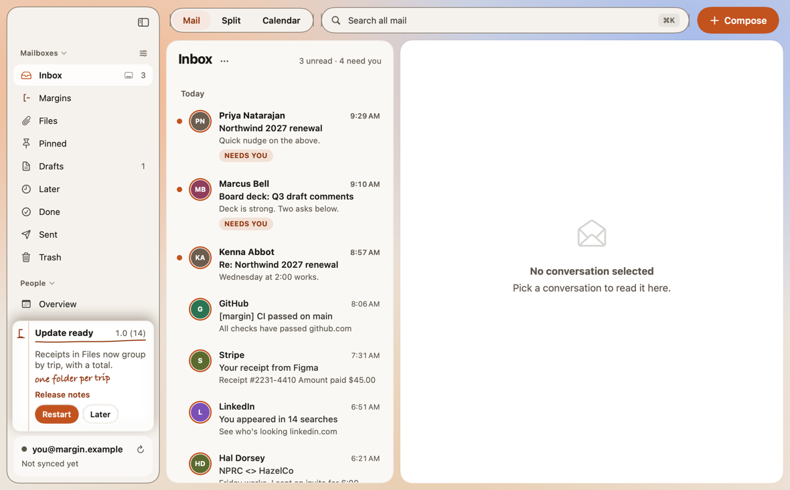

The first one. Thanks for being here.
Release notes
MarginMail 1.0 (3)
Mon, Nov 2 · Beta
Updates now arrive in a slip at the foot of the sidebar, with a line from us and a link to what changed. Restart when it suits you, or choose Later and it comes back once.

